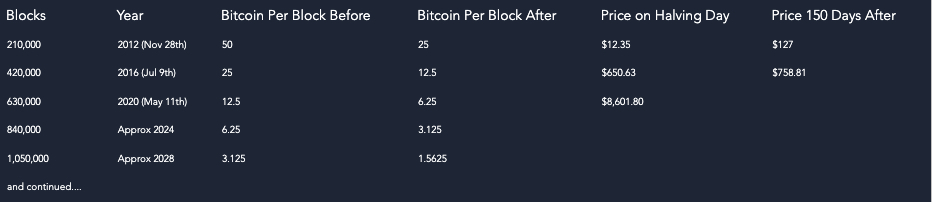
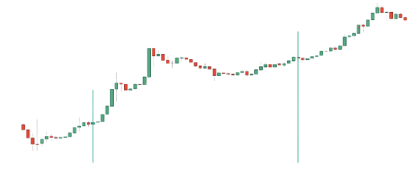

Bitcoin Halving Clock
Date ETA: 7th May 2024
Understanding Bitcoin Halving
Approximately every four years Bitcoin goes through a halving protocol. Cutting the supply of new Bitcoins in half, halving the miner’s
block production reward. This happens after 210,000 blocks are mined and will continue until the reward to miners is 0.
Bitcoin was created with a limit of 21 million Bitcoins, which can be in existence. This was to counter the inflammatory nature of fiat
currency. The idea is that over time, bitcoins mined will decrease and thus become scarcer over time. This will intern increase the demand.

Bitcoin Mining
Bitcoin mining is the process of which certain nodes, called “miners” use specialised equipment to solve mathematical problems to
validate a transaction made on the network. This closes a block in the Bitcoin blockchain and the miner is rewarded with Bitcoin. This
keeps the network decentralised as no bank or authority validates the transactions. Miners are incentivised to participate in the process
with the Bitcoin reward. It is though that once all Bitcoin has be mined (approximately 2140 ), miners will still be incentivised to validate the
Bitcoin blockchain as they will collect transaction fees from users.
What Will Happen When Bitcoin Halves?
There has always been debate as to what Bitcoin will do in terms of pricing for a halving event. Some people believe the halving has
already been priced in by the market and will not expect the price to change drastically. Others believe that due to the simple rules of
supply and demand the Bitcoin market price will increase. You can see below an example of prices movements from previous Bitcoin
halving protocols:

How to Buy and Sell Bitcoin
We have compiled a list and reviews of exchanges to buy and sell Bitcoin. Comparing aspects such as fees, usability, support,
deposit methods (acceptance of fiat money GBP, USD, Euro etc)